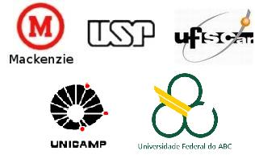
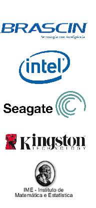

ERAD-SP 2010: I Escola Regional de Alto Desempenho de SP
Patrocínio:
Se sua empresa está interessada em patrocinar a ERAD-SP 2010.
Minicursos
Arquiteturas Paralelas
Prof. Dr. Edson Midorikawa (Poli-USP)
Programação paralela: CUDA
Raphael Y. de Camargo (UFABC)
Programação Paralela: multicores e clusters
Profa. Dra. Liria Matsumoto Sato (Poli-USP)
Grades Computacionais e Computação em Nuvem
Prof. Dr. Alfredo Goldman (IME-USP)
| Promoção | Organização | Patrocínio |
 |
 |  |